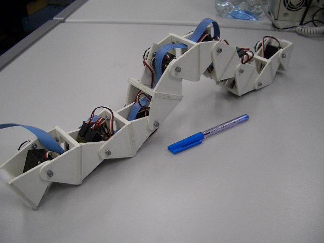

Next: 2 Mechanical description Up: Locomotion of a Modular Previous: Locomotion of a Modular
Modular self-reconfigurable robots offer the promise of more versatility, robustness and low cost[1]. They are composed of modules, capable of attach and detach one to each other, changing the shape of the robot. This scheme allows them to perform unusual actions like to traverse through any kind of terrain as well as climbing over obstacles or crawling inside tubes. Utilities outside the research world has not been seen yet, but they are planned to be used in space applications[3] and urban search and rescue[2].
A modular robot with N different types of modules is called N-modular. Heterogeneity is tend to be reduced, decreasing the ratio between N and the total number of modules. In the last years, the number of robot following this approach has growth substantially[5][6][7][8].
One of the most advanced systems is Polybot[1][4], a 2-modular reconfigurable robot. Different reconfigurations and gaits has been probed; for example, from a loop, that uses a rolling gait, to a snake, with a sinusoidal gait, and finally to an spider. Currently, the third generation of modules (G3) is being developed[9]. Each module has its own embebed PowerPC 555 processor with a traditional processor architecture.
An addtional step on moduratity is the use of FPGA technology instead of a conventional microprocessor chip. It gives the designer the possibility of implementing new architectures, faster control algorithms, or dinamically modify the hardware to adapt it to a new situation. In summary, Modular Reconfigurable Robot controlled by a FPGA not only are able to change their shapes, but also their hardware, so that, complete versatility can be achieved.
|
 |
In this paper, a modular worm-like robot (figure ![[*]](crossref.png) ),
named Cube is presented. This is the simplest kind of modular robot,
composed of 8 equal linked modules (1-modular robot). The locomotion
is achieved by the propagation of waves that travel through the robot,
from tail to the head. The entirely locomotion controller is embedded
into an FPGA.
),
named Cube is presented. This is the simplest kind of modular robot,
composed of 8 equal linked modules (1-modular robot). The locomotion
is achieved by the propagation of waves that travel through the robot,
from tail to the head. The entirely locomotion controller is embedded
into an FPGA.
In this first prototype, the problem of worms locomotion and FPGA-based control has been solved. The control system is centralized; an unique custom FPGA processor can control the 8 modules.
The MicroBlaze soft-processor[10] has been selected as core processor. Additional hardware units has been implemented as VHDL modules. MicroBlaze is a powerful 32-bit processor, that offers new capabilities not available on conventional processors, like the addition of custom peripheral, duplicated modules to increase reliability, or the use of dynamic reconfiguration to adapt the control to a new enviroment. This soft-processor can also run operating systems like uC/OS-II[11], a real time OS, or uCLinux[12].
The organization of the paper is as follows. Firstly, the mechanics and the modules is presented. Secondly, the robot locomotion, algorithms, and the locomotion controller is addressed. Finally, the implementation on FPGA is explained and the results are presented.
Juan Gonzalez 2004-10-08